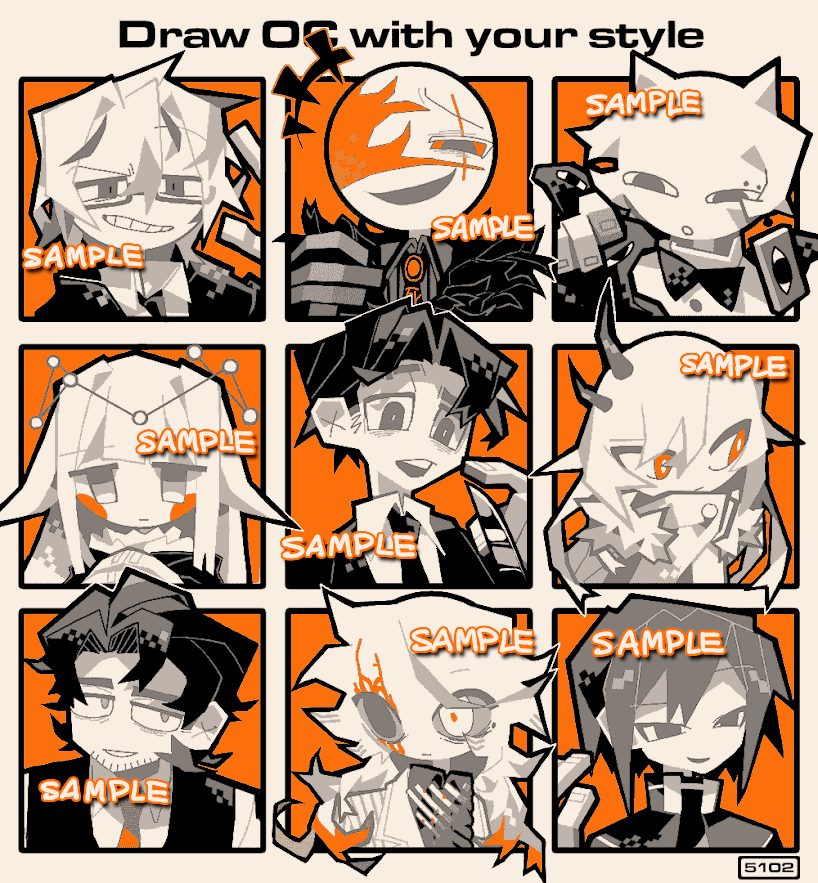

中国の方メインで受け付けたリクエスト。9人のお方、リクエストありがとうございました。
今回は手書きブログは使用せずKritaで制作。
最近、決まった4色だけを使うのにハマっている。色使いで「この絵はこの人の作品だ」とすぐ分かってもらえると嬉しいので。
しかしながら、私はオレンジでなく朱色の方が好きなので、飽きたらやめると思う。
みなさん、ユーザーネームがもはや文章だったりコロコロ変わったりで、何が活動名義なのかよくわからないので、クレジットは省略する...
2024/05/02
 中国のみなさんありがとう（Request）
中国のみなさんありがとう（Request）